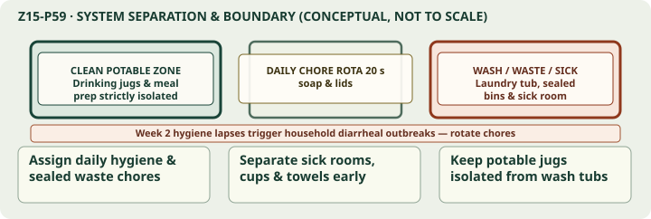

Z15-P59 · Disaster scenarios · New manuscript
Sustain household hygiene, laundry, waste, and illness isolation across 30 days
Prevent secondary diarrheal, respiratory, and skin-infection outbreaks that historically cause major morbidity during prolonged disasters.
When it applies · Multi-week water, sewer, garbage, or grid disruptions with families living closely indoors.
Equipment · Spigot handwashing station, soap/alcohol rub, double-bagged sanitation/trash bins, clean linens, and sick-room separation plan.

Actions
- Treat strict hand hygiene, clean drinking/cooking water, and sealed waste containment as non-negotiable daily chores—assigning clear daily rotation among household members so fatigue never lets sanitation slip in Week 2.[U13, F01, D18]
- Manage laundry conservatively when machines are offline (wearing clean dry inner base layers, airing outer wool/fleece layers, hand-washing essential undergarments/socks in a labeled tub with minimal water away from drinking jugs, and line-drying cleanly).[U13, D18]
- If ANY household member develops vomiting, diarrhea, fever, or contagious cough during a prolonged disruption, isolate them in a separate ventilated room if possible, dedicate separate cups/towels/waste liners, and enforce strict caregiver handwashing while monitoring for medical evacuation red flags.[U13, M17, F01]
Failure recognition · Letting dirty dishes, unwashed hands, and unsealed garbage accumulate in Week 2 of an outage until gastrointestinal illness sweeps the whole house.[U13, F01]
Verify · Confirm daily assigned hygiene/waste chores, isolated clean drinking-water jugs, and sick-room separation readiness.[U13, D18]
Stop or change course · Uncontrolled household vomiting/diarrhea, failed sanitation containment, or worsening fever/dehydration requires medical care and relocation to functioning facilities.[M17, U13, U17]
Evidence and editorial notes
- D18 · FEMA / Ready.gov · Drought (current web edition)
- Section: Extended 30-Day Resilience, Supply Pacing, and Mutual Aid · Conditions: Multi-week regional disruption, supply-chain interruption, or prolonged utility recovery
Support: Manage 30-day household resilience through structured inventory tracking, conservative water/fuel/battery rationing, scheduled sanitation and hygiene routines, daily neighborhood wellness checks, and early transition to community distribution hubs before critical reserves run dry.
Limitations: Self-reliance plans must remain integrated with municipal/county relief and medical care—isolation without community check-ins increases mortality during prolonged disasters. · Conflicting evidence: None; frames 30-day scenarios realistically without doom-isolationism.
Editorial note: Anchors Z15 30-day operations, rationing logs, and community mutual-aid cards. · Specialist reviewer: Emergency management and community resilience
Primary source · checked 2026-11-24 - F01 · USDA / FDA / CDC · Four Steps to Food Safety (current web edition)
- Section: Clean and Separate · Conditions: Food preparation with safe water and surfaces
Support: Wash hands and separate raw animal foods and juices from ready-to-eat food.
Limitations: Requires safe water or approved hand hygiene substitutes in outages. · Conflicting evidence: None; retained for food safety pack completeness.
Editorial note: Maintains five-pack integrity. · Specialist reviewer: Food safety and public health
Primary source · checked 2026-11-24 - M17 · NIH / MedlinePlus · Dehydration (current web edition)
- Section: Dehydration Recognition, Oral Rehydration, and Red Flags · Conditions: Heat exertion, prolonged diarrhea, vomiting, or inadequate water intake
Support: Encourage small frequent sips of safe potable water or labeled oral rehydration solution in alert patients able to swallow; evacuate urgently for confusion, inability to keep fluids down, sunken eyes, or minimal dark urine.
Limitations: Severely dehydrated or altered patients cannot safely rehydrate by mouth alone. · Conflicting evidence: None; avoids unverified homemade salt-sugar ratio guesswork when labeled packets exist.
Editorial note: Links hydration monitoring to medical evacuation triggers. · Specialist reviewer: Wilderness medicine and internal medicine
Primary source · checked 2026-11-24 - U13 · CDC · How to Make Water Safe in an Emergency (2024-09-19)
- Section: Sanitation, Hand Hygiene, and Emergency Waste Containment · Conditions: Household water-service or sewer interruption
Support: Maintain separate handwashing stations using safe water and soap (or alcohol hand rub when hands are not visibly soiled), line emergency bucket toilets with heavy bags and tight lids when sewer service is unusable, and never mix bleach with ammonia or acids.
Limitations: Improvised sanitation is a temporary containment bridge until municipal sewer or licensed sanitation resumes; follow local health department disposal orders. · Conflicting evidence: None; prevents fecal-oral outbreaks and toxic chloramine gas mixing.
Editorial note: Core household sanitation and chemical-mixing boundary in Z13. · Specialist reviewer: Environmental health and sanitation specialist
Primary source · checked 2026-11-24 - U17 · FEMA / Ready.gov · Evacuation (current web edition)
- Section: Household Evacuation Thresholds When Utilities Fail · Conditions: Uninhabitable indoor temperatures, sewage backup, persistent CO alarm, or structural/utility hazard
Support: Establish clear pre-agreed exit triggers to relocate to a warming center, hotel, or relatives BEFORE indoor freezing, carbon monoxide alarms, medical-device battery exhaustion, or impassable blizzard roads trap occupants.
Limitations: Waiting until indoor pipes burst or batteries hit zero removes safe travel options. · Conflicting evidence: None; aligns with T13 and E14.
Editorial note: Defines objective household abandonment thresholds in Z13. · Specialist reviewer: Emergency management and cold-weather operations
Primary source · checked 2026-11-24
Source lineage · CDC Emergency Sanitation and USDA Food Safety; new manuscript · Classification · New manuscript.